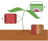

transpiration

Definition: Transpiration is the process of water movement through a plant and its evaporation from aerial parts, such as leaves, stems and flowers. Water is necessary for plants but only a small amount of water taken up by the roots is used for growth and metabolism. The remaining 97–99.5% is lost by transpiration and guttation. Leaf surfaces are dotted with pores called stomata (singular "stoma"), and in most plants they are more numerous on the undersides of the foliage. The stomata are bordered by guard cells and their stomatal accessory cells (together known as stomatal complex) that open and close the pore. Transpiration occurs through the stomatal apertures, and can be thought of as a necessary "cost" associated with the opening of the stomata to allow the diffusion of carbon dioxide gas from the air for photosynthesis. Transpiration also cools plants, changes osmotic pressure of cells, and enables mass flow of mineral nutrients and water from roots to shoots. Two major factors influence the rate of water flow from the soil to the roots: the hydraulic conductivity of the soil and the magnitude of the pressure gradient through the soil. Both of these factors influence the rate of bulk flow of water moving from the roots to the stomatal pores in the leaves via the xylem.Mass flow of liquid water from the roots to the leaves is driven in part by capillary action, but primarily driven by water potential differences. If the water potential in the ambient air is lower than the water potential in the leaf airspace of the stomatal pore, water vapor will travel down the gradient and move from the leaf airspace to the atmosphere. This movement lowers the water potential in the leaf airspace and causes evaporation of liquid water from the mesophyll cell walls. This evaporation increases the tension on the water menisci in the cell walls and decreases their radius and thus the tension that is exerted on the water in the cells. Because of the cohesive properties of water, the tension travels through the leaf cells to the leaf and stem xylem where a momentary negative pressure is created as water is pulled up the xylem from the roots. As evaporation occurs at the leaf surface, the properties of adhesion and cohesion work in tandem to pull water molecules from the roots, through xylem tissue, and out of the plant through stomata. In taller plants and trees, the force of gravity pulling the water inside can only be overcome by the decrease in hydrostatic pressure in the upper parts of the plants due to the diffusion of water out of stomata into the atmosphere. Water is absorbed by the roots by osmosis, and any dissolved mineral nutrients travel with it through the xylem.
Source: Wikipedia
Wikipedia Page (Something wrong with this association? Let us know.)
Wikidata Page (Something wrong with this association? Let us know.)
Occurs in: